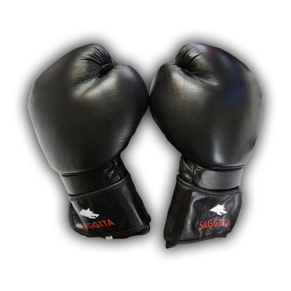

Czy Muay Thai jest dla mnie?  Płeć: Kobieta Mężczyzna Wiek:lat Wzrost:cm Waga:kg BMI Poziom aktywności: wybierz poziom atywności Brak 1-3 h/tydzień 4-6 h/tydzień 7-14 h/tydzień więcej Tryb pracy: określ tryb pracy Siedząca Fizyczna Umiarkowana aktywność Które z poniższych zauważasz u siebie: Ciągly stres Słaba koordynacja ruchowa Niska mobilność ciała Znikoma kondycja Brak pewności siebie Obawy: